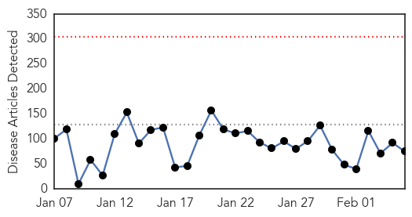
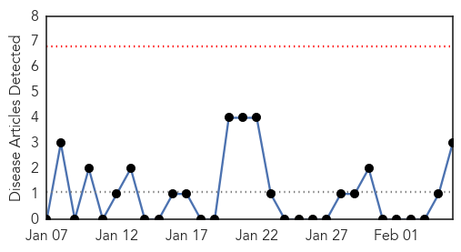

Ebola
30-Day Web Trend
0 alerts, 0 warnings

30-Day Twitter Trend
2 alerts, 0 warnings

Article Locations

Article Confidences

Top Articles:
- 1.000
- Guinea, the ground zero of the Ebola outbreak, now hopes the end is near
- 1.000
- The World Looks Away as Ebola Surges
- 1.000
- The World Looks Away as Ebola Surges
- 1.000
- Traveler being monitored in Madison for Ebola virus
- 1.000
- Ebola outbreak: Doctors warn of 'post-Ebola syndrome' among survivors in West Africa
- 0.999
- MSF says lack of public health messages on Ebola "big mistake"
- 0.999
- Ebola outbreak: Doctors warn of 'post-Ebola syndrome' among survivors in West Africa
- 0.999
- Person in Madison area being monitored for possible Ebola symptoms
- 0.999
- Tests confirm traveler being monitored at local hospital does not have Ebola
- 0.999
- Did we celebrate too soon? Number of new Ebola cases in West Africa rises for first time in 2015
- 0.999
- Patient being monitored in Madison for Ebola
- 0.999
- Downward Ebola trend suddenly reverses itself
- 0.998
- UPDATE: Wisconsin traveler triggers Madison Ebola response, moni
- 0.998
- U.S. to leave Liberia as Ebola rates plummet
- 0.998
- Anti-Ebola Drug Shows Encouraging Results in Guinea
- 0.998
- GP who swapped Sheffield surgery for Sierra Leone tells of fight against Ebola
- 0.997
- Military Ebola mission in Liberia coming to an end
- 0.997
- Number of new Ebola cases rises for first time in 2015: WHO
- 0.995
- West Africa's Diaspora Reacts to Ebola
- 0.995
- Health Highlights
- 0.995
- Military Ebola mission in Liberia coming to an end
- 0.994
- WHO: Ebola Cases Rise For the First Time in 2015
- 0.993
- Secret burials thwarting efforts to stamp out Ebola
- 0.993
- Post-Ebola Syndrome: Survivors Report Memory Loss, Chest Pain, Mental Illness, Eye Problems
- 0.993
- Drug trials in Guinea yield ‘encouraging’ results
- 0.990
- Last mile in fight against Ebola will be the hardest
- 0.990
- Ebola Vaccines Trial Begins in Liberia
- 0.989
- Ebola funding held up by ‘inefficient’ WHO alert system
- 0.986
- U.N. body demands debt cancellation for Ebola-impacted countries : Frost Illustrated
- 0.984
- Cuban Medics Fighting Ebola Nominated for Nobel Peace Prize
- 0.978
- Ebola cases on rise for first time this year, says WHO
- 0.978
- Fewer Than Half of Ebola Pledges Have Reached Area in Need
- 0.975
- War of the generals over Mamasapano
- 0.975
- PH slams China over vessels and clams
- 0.975
- Furious Jordan vows ‘severe response’ to ISIS
- 0.975
- 3 Filipinos kidnapped in Libya
- 0.969
- Thanks to your donations, children in Guinea are back in school after Ebola
- 0.969
- Ebola cases on rise for first time this year, WHO says
- 0.967
- Sierra Leonean official warns traditional leader over Ebola resurgence
- 0.962
- Scots GP sets up charity to fund Ebola treatment
- 0.961
- Free from Ebola, survivors complain of new syndrome
- 0.954
- Emory after Ebola: Teachable moments
- 0.953
- Highland Ebola doctor Chris Mair says Sierra Leone health service in crisis
- 0.948
- Ebola crisis: IMF announces $US100 million debt relief for Guinea, Liberia and Sierra Leone
- 0.938
- IOM Sierra Leone tests Ebola airport screening
- 0.936
- Chaos as 'Ebola' corpse lands in Harare
- 0.935
- Sierra Leone: Secretary-General Appoints Bintou Keita of Guinea Ebola Crisis Manager for Sierra Leone
- 0.932
- IMF Announces $260 Million Aid Package and a New Catastrophe Relief Fund for Ebola-Stricken Countries
- 0.930
- PH donates P90M for Ebola response
- 0.921
- Statement by Commissioner Stylianides, EU Ebola Coordinator, on rising Ebola case numbers - Sierra Leone
Showing top 50 articles...
Top Tweets:
- 0.993
- RT: Mboté Baninga ! Pour la lutte contre Ebola en Afrique. Envoie "Stop Ebola" au 7979 à 100FCFA. AfricaAgainstEbola http:/…
- 0.742
- Ebola survivors talk stigma lessons learned and the future of ebola in West Africa on WHYS
- 0.645
- RT: L'avenir de l'Afrique dépend de vous ! Faites un don en envoyant "STOP EBOLA" au 1919 ! AfricaAgainstEbola kebetu http://t.co…
- 0.603
- [USATODAY] CDC finds lapses in latest lab mishap with Ebola virus http://t.co/HEGGzODdzr EBOLANEWS
- 0.572
- [VOA] WHO: Ebola Cases Rise Again in West Africa http://t.co/9wjW7UxRGr EBOLANEWS
- 0.547
- RT: Doctors warn of 'post-Ebola syndrome' among survivors: http://t.co/H7NwaM04rp Ebola EbolaStory Westafrica infectiousdi…
- 0.530
- Le nombre de cas d'Ebola en hausse pour la première fois en 2015 http://t.co/mgYKKDI80Q via
MERS
30-Day Web Trend
0 alerts, 0 warnings

30-Day Twitter Trend
0 alerts, 0 warnings

Article Locations
Article Confidences

Top Articles:
Top Tweets:
-
No tweets found for Feb 05, 2015